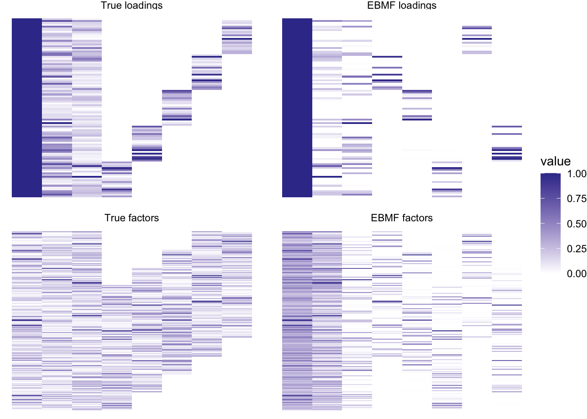
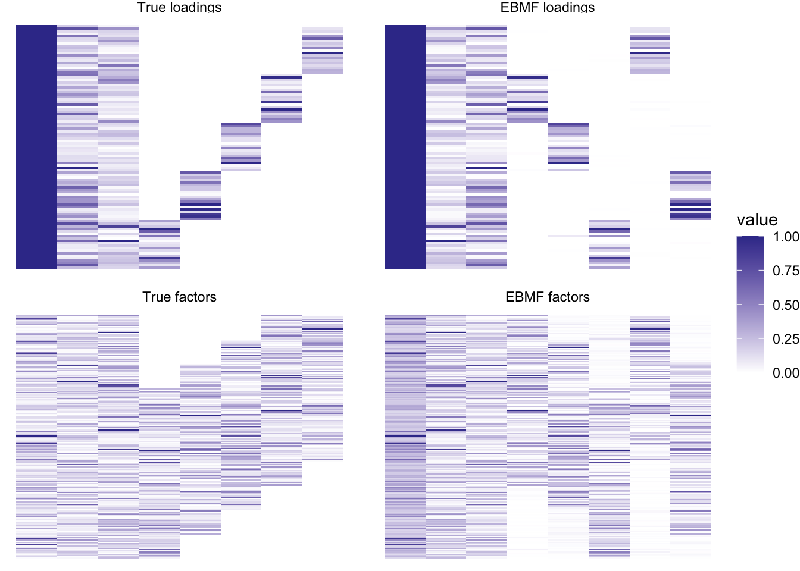
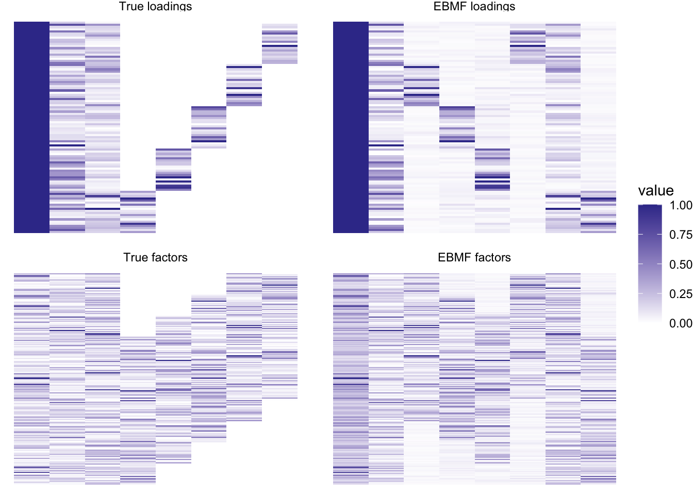

Last updated: 2022-03-26
Checks: 7 0
Knit directory: scFLASH/
This reproducible R Markdown analysis was created with workflowr (version 1.6.2). The Checks tab describes the reproducibility checks that were applied when the results were created. The Past versions tab lists the development history.
Great! Since the R Markdown file has been committed to the Git repository, you know the exact version of the code that produced these results.
Great job! The global environment was empty. Objects defined in the global environment can affect the analysis in your R Markdown file in unknown ways. For reproduciblity it’s best to always run the code in an empty environment.
The command set.seed(20181103) was run prior to running the code in the R Markdown file. Setting a seed ensures that any results that rely on randomness, e.g. subsampling or permutations, are reproducible.
Great job! Recording the operating system, R version, and package versions is critical for reproducibility.
Nice! There were no cached chunks for this analysis, so you can be confident that you successfully produced the results during this run.
Great job! Using relative paths to the files within your workflowr project makes it easier to run your code on other machines.
Great! You are using Git for version control. Tracking code development and connecting the code version to the results is critical for reproducibility.
The results in this page were generated with repository version c98017d. See the Past versions tab to see a history of the changes made to the R Markdown and HTML files.
Note that you need to be careful to ensure that all relevant files for the analysis have been committed to Git prior to generating the results (you can use wflow_publish or wflow_git_commit). workflowr only checks the R Markdown file, but you know if there are other scripts or data files that it depends on. Below is the status of the Git repository when the results were generated:
Ignored files:
Ignored: .DS_Store
Ignored: .Rhistory
Ignored: .Rproj.user/
Ignored: code/initialization/
Ignored: data-raw/10x_assigned_cell_types.R
Ignored: data/.DS_Store
Ignored: data/10x/
Ignored: data/Ensembl2Reactome.txt
Ignored: data/droplet.rds
Ignored: data/mus_pathways.rds
Ignored: output/backfit/
Ignored: output/final_montoro/
Ignored: output/lowrank/
Ignored: output/prior_type/
Ignored: output/pseudocount/
Ignored: output/pseudocount_redux/
Ignored: output/size_factors/
Ignored: output/var_reg/
Ignored: output/var_type/
Untracked files:
Untracked: analysis/NBapprox.Rmd
Untracked: analysis/final_pbmc.Rmd
Untracked: analysis/trachea4.Rmd
Untracked: code/alt_montoro/
Untracked: code/final_pbmc/
Untracked: code/missing_data.R
Untracked: code/prior_type/priortype_fits_pbmc.R
Untracked: code/pseudocount_redux/pseudocount_fits_pbmc.R
Untracked: code/pulseseq/
Untracked: code/size_factors/sizefactor_fits_pbmc.R
Untracked: code/trachea4.R
Untracked: mixsqp_fail.rds
Untracked: output/alt_montoro/
Untracked: output/deng/
Untracked: output/final_pbmc/
Untracked: output/pulseseq_fit.rds
Untracked: tmp.txt
Unstaged changes:
Modified: code/deng/deng.R
Modified: code/utils.R
Modified: data-raw/pbmc.R
Note that any generated files, e.g. HTML, png, CSS, etc., are not included in this status report because it is ok for generated content to have uncommitted changes.
These are the previous versions of the repository in which changes were made to the R Markdown (analysis/snmf_on_nmf2.Rmd) and HTML (docs/snmf_on_nmf2.html) files. If you’ve configured a remote Git repository (see ?wflow_git_remote), click on the hyperlinks in the table below to view the files as they were in that past version.
| File | Version | Author | Date | Message |
|---|---|---|---|---|
| Rmd | c98017d | Jason Willwerscheid | 2022-03-26 | wflow_publish(“analysis/snmf_on_nmf2.Rmd”) |
Here I’d like to take a closer look at non-negative EBMF. In the previous analysis, I showed that it does a very good job finding the “true” structure even in a more complex simulation scenario. There, I used the greedy + backfit algorithm with point-exponential priors. Peter Carbonetto raised the question of initialization: can we initialize using the nnlm solution and then refine via a flashier backfit? Relatedly, what does the greedy “initialization” look like? How does flashier get from the greedy fit to the “correct” backfit solution? Finally, Matthew Stephens suggested that it might be computationally advantageous to use point-exponential priors with mode to be estimated for loadings. Any non-zero modes can then be absorbed into a fixed mean loadings vector of ones. How does this approach compare to the results I’ve already obtained?
I use the same simulation function and a similar plot function to the previous analysis.
library(flashier)
#> Loading required package: magrittr
library(tidyverse)
#> ── Attaching packages ─────────────────────────────────────── tidyverse 1.3.1 ──
#> ✓ ggplot2 3.3.5 ✓ purrr 0.3.4
#> ✓ tibble 3.1.6 ✓ dplyr 1.0.8
#> ✓ tidyr 1.2.0 ✓ stringr 1.4.0
#> ✓ readr 2.0.0 ✓ forcats 0.5.1
#> ── Conflicts ────────────────────────────────────────── tidyverse_conflicts() ──
#> x tidyr::extract() masks magrittr::extract()
#> x dplyr::filter() masks stats::filter()
#> x dplyr::lag() masks stats::lag()
#> x purrr::set_names() masks magrittr::set_names()
sim_data <- function(n = 100,
p = 200,
K = 6,
L.nn = 10,
F.nn = 20,
se = 0.1,
K.dense = 1,
seed = 666) {
set.seed(seed)
LL <- matrix(rexp(n * K), nrow = n, ncol = K)
FF <- matrix(rexp(p * K), nrow = p, ncol = K)
# "Mean" factor.
LL[, 1] <- 3
# Additional sparse nonnegative factors.
for (k in (K.dense + 1):K) {
L.nn.idx <- seq((k - K.dense - 1) * L.nn + 1, (k - K.dense) * L.nn)
F.nn.idx <- seq((k - K.dense - 1) * (F.nn / 2) + 1, (k + K.dense) * (F.nn / 2))
LL[setdiff(1:n, L.nn.idx), k] <- 0
FF[setdiff(1:p, F.nn.idx), k] <- 0
}
# Add normal noise.
Y <- LL %*% t(FF) + rnorm(n * p, sd = se)
# Add a constant (which can be absorbed by mean factor) to ensure nonnegativity.
Y <- Y - min(Y)
return(list(LL = LL, FF = FF, Y = Y))
}
plot_it <- function(simdat, snmf_res) {
LL <- simdat$LL
to_tibble <- function(mat, type) {
mat <- scale(mat, center = FALSE, scale = apply(mat, 2, function(x) max(abs(x))))
return(
as_tibble(mat, .name_repair = "unique") %>%
mutate(row = row_number()) %>%
pivot_longer(!row, names_to = "k", values_to = "value") %>%
add_column(type = type)
)
}
suppressMessages({
tib <- to_tibble(simdat$LL, "True loadings") %>%
bind_rows(to_tibble(simdat$FF, "True factors")) %>%
bind_rows(to_tibble(snmf_res$L.pm, "EBMF loadings")) %>%
bind_rows(to_tibble(snmf_res$F.pm, "EBMF factors")) %>%
mutate(k = as.numeric(str_remove_all(k, "\\."))) %>%
mutate(type = factor(type, levels = c(
"True loadings", "EBMF loadings",
"True factors", "EBMF factors"
)))
})
ggplot(tib, aes(x = k, y = row, fill = value)) +
geom_tile() +
scale_fill_gradient2() +
facet_wrap(~type, nrow = 2, ncol = 2, dir = "h", scales = "free") +
theme_void()
}This fit is slightly different to the previous analysis is that I use a fixed “mean” vector of ones for the first vector of loadings.
The greedy fit appears as follows:
simdat <- sim_data(K = 8, se = 1, L.nn = 20, F.nn = 40, K.dense = 3)
ones <- matrix(1, nrow = nrow(simdat$Y), ncol = 1)
ls.soln <- t(solve(crossprod(ones), crossprod(ones, simdat$Y)))
greedy_res <- flash.init(simdat$Y) %>%
flash.set.verbose(0) %>%
flash.init.factors(init = list(ones, ls.soln)) %>%
flash.fix.factors(kset = 1, mode = 1) %>%
flash.add.greedy(
Kmax = 7,
ebnm.fn = ebnm::ebnm_point_exponential,
init.fn = function(fl) init.fn.default(fl, dim.signs = c(1, 1))
)
plot_it(simdat, greedy_res)
So it already captures the correct structure, but the loadings and factors are a bit “thinner” or sparser than they should be.
The results using greedy + backfit are as follows. (This method was used in the previous analysis.)
bf_t <- system.time({
bf_res <- greedy_res %>%
flash.backfit()
})
plot_it(simdat, bf_res)
Very nice! And fast – this backfit took only 1.703 seconds.
Recall from the previous analysis that the nnlm fit is not nearly as clean as the flashier fit. Can EBMF improve upon the nnlm results?
nnmf_res <- NNLM::nnmf(simdat$Y, init = list(W0 = ones), k = 7, verbose = 0)
nnlmbf_t <- system.time({
nnlmbf_res <- flash.init(simdat$Y) %>%
flash.set.verbose(0) %>%
flash.init.factors(
list(nnmf_res$W[, c(8, 1:7)], t(nnmf_res$H[c(8, 1:7), ])),
ebnm.fn = ebnm::ebnm_point_exponential
) %>%
flash.fix.factors(kset = 1, mode = 1) %>%
flash.backfit()
})
plot_it(simdat, nnlmbf_res)
Still pretty good! Loadings are not exactly sparse, but close enough. This method does take a bit longer: this backfit took 3.795 seconds.
Can using point-exponential priors with a non-zero mode improve either the fit or the computation time? The greedy + backfit algorithm already works really well on this scenario, so I’ll focus instead on backfitting the nnlm fit.
nzpe_t <- system.time({
nzpe_res <- flash.init(simdat$Y) %>%
flash.set.verbose(3) %>%
flash.init.factors(
list(nnmf_res$W[, c(8, 1:7)], t(nnmf_res$H[c(8, 1:7), ])),
ebnm.fn = c(
as.ebnm.fn(prior_family = "point_exponential", mode = "estimate"),
ebnm::ebnm_point_exponential
)
) %>%
flash.fix.factors(kset = 1, mode = 1) %>%
flash.backfit()
})
#> Convergence tolerance set to 2.98e-04.
#> Backfitting 8 factors (tolerance: 2.98e-04)...
#> Iteration Factor ELBO Diff Max Chg
#> 1 all NA 2.39e-02
#> 2 all 8.54e+01 -1.52e-02
#> 3 all 5.24e+01 -1.16e-02
#> 4 all 3.61e+01 -9.74e-03
#> 5 all 2.73e+01 -1.29e-02
#> 6 all 1.95e+01 -1.09e-02
#> 7 all 1.45e+01 -7.95e-03
#> 8 all 1.22e+01 -1.39e-02
#> 9 all 1.07e+01 -1.33e-02
#> 10 all 1.01e+01 -2.19e-02
#> 11 all 8.74e+00 1.28e-02
#> 12 all 7.50e+00 -2.67e-02
#> 13 all 2.94e+00 -2.21e-02
#> 14 all 1.16e+01 7.53e-03
#> 15 all 8.57e+00 8.36e-03
#> 16 all 5.90e+00 9.16e-03
#> 17 all 6.30e+00 9.83e-03
#> 18 all 9.30e+00 1.43e-02
#> 19 all 8.49e+00 2.52e-02
#> 20 all 1.11e+01 -4.30e-03
#> 21 all 1.14e+01 -5.88e-03
#> 22 all 7.92e+00 7.05e-03
#> 23 all 2.08e+00 9.22e-03
#> 24 all 3.29e+00 -3.01e-03
#> 25 all 3.36e+00 -4.18e-03
#> 26 all 3.41e+00 -5.53e-03
#> 27 all 4.29e+00 -5.83e-03
#> 28 all 6.75e+00 7.18e-03
#> 29 all 1.26e+01 1.19e-02
#> 30 all 2.45e+01 2.32e-02
#> 31 all 3.46e+01 -3.56e-02
#> 32 all 8.68e+00 6.29e-03
#> 33 all 7.40e+00 -6.84e-03
#> 34 all 3.57e+00 -8.69e-03
#> 35 all 1.46e+00 -3.88e-03
#> 36 all 1.23e+00 5.20e-03
#> 37 all 1.18e+00 4.87e-03
#> 38 all 1.56e+00 2.98e-03
#> 39 all 2.19e+00 4.53e-03
#> 40 all 3.09e+00 5.16e-03
#> 41 all 4.48e+00 -9.42e-03
#> 42 all 4.51e+00 -1.51e-02
#> 43 all 2.12e+00 7.33e-03
#> 44 all 1.64e+00 9.43e-03
#> 45 all 8.99e-01 -6.82e-03
#> 46 all 1.13e+00 -9.79e-03
#> 47 all 1.22e+00 -1.19e-02
#> 48 all 2.09e+00 9.15e-03
#> 49 all 1.14e+00 8.75e-03
#> 50 all 7.37e-02 9.97e-03
#> 51 all 9.03e-01 -5.95e-03
#> 52 all 5.74e-01 -5.19e-03
#> 53 all 3.46e-01 -4.26e-03
#> 54 all 4.82e-01 3.85e-03
#> 55 all 7.70e-01 4.51e-03
#> 56 all 1.04e+00 6.43e-03
#> 57 all 1.41e+00 -1.14e-02
#> 58 all 1.89e+00 -1.51e-02
#> 59 all 2.12e+00 8.76e-03
#> 60 all 9.06e-01 1.20e-02
#> 61 all 4.31e-01 3.42e-03
#> 62 all 3.05e-01 2.55e-03
#> 63 all 2.34e-01 -2.53e-03
#> 64 all 2.74e-01 -2.01e-03
#> 65 all 3.49e-01 -1.98e-03
#> 66 all 4.70e-01 2.90e-03
#> 67 all 6.97e-01 -2.70e-03
#> 68 all 1.13e+00 3.87e-03
#> 69 all 1.88e+00 -7.25e-03
#> 70 all 2.49e+00 -1.40e-02
#> 71 all 3.07e-01 -2.66e-02
#> 72 all 4.42e+00 9.61e-03
#> 73 all 3.41e+00 1.36e-02
#> 74 all 1.92e+00 1.13e-02
#> 75 all 1.52e+00 -1.62e-02
#> 76 all 2.39e+00 -8.88e-03
#> 77 all 1.34e+00 8.84e-03
#> 78 all 4.83e-01 9.24e-03
#> 79 all 7.15e-01 9.95e-03
#> 80 all 1.27e+00 9.52e-03
#> 81 all 8.99e-01 -1.99e-02
#> 82 all 2.97e+00 9.43e-03
#> 83 all 1.27e+00 1.21e-02
#> 84 all 5.97e-01 -3.76e-03
#> 85 all 4.50e-01 -4.07e-03
#> 86 all 3.99e-01 -2.53e-03
#> 87 all 4.93e-01 -2.45e-03
#> 88 all 6.59e-01 -2.33e-03
#> 89 all 9.39e-01 3.13e-03
#> 90 all 1.46e+00 3.65e-03
#> 91 all 2.58e+00 6.92e-03
#> 92 all 4.96e+00 1.43e-02
#> 93 all 8.59e+00 2.83e-02
#> 94 all 9.26e+00 4.21e-02
#> 95 all 4.52e+00 1.25e-02
#> 96 all 2.46e+00 1.24e-02
#> 97 all 9.23e-01 -4.29e-03
#> 98 all 7.74e-01 -4.93e-03
#> 99 all 5.73e-01 -2.81e-03
#> 100 all 4.94e-01 3.32e-03
#> 101 all 4.08e-01 3.36e-03
#> 102 all 1.81e-01 3.92e-03
#> 103 all 1.75e-01 -2.10e-03
#> 104 all 1.46e-01 -2.48e-03
#> 105 all 1.07e-01 1.68e-03
#> 106 all 1.19e-01 2.10e-03
#> 107 all 1.50e-01 2.12e-03
#> 108 all 1.50e-01 3.11e-03
#> 109 all 8.63e-02 4.42e-03
#> 110 all 2.33e-01 -2.43e-03
#> 111 all 1.66e-01 3.01e-03
#> 112 all 8.04e-02 2.48e-03
#> 113 all 3.70e-02 3.49e-03
#> 114 all 1.31e-01 -2.42e-03
#> 115 all 8.27e-02 -2.47e-03
#> 116 all 3.22e-02 -2.21e-03
#> 117 all 4.06e-02 2.50e-03
#> 118 all 9.20e-02 3.03e-03
#> 119 all 7.38e-02 4.53e-03
#> 120 all 1.74e-01 -2.63e-03
#> 121 all 9.45e-02 -3.55e-03
#> 122 all 3.79e-02 1.09e-03
#> 123 all 3.01e-02 1.08e-03
#> 124 all 2.77e-02 7.98e-04
#> 125 all 3.24e-02 5.58e-04
#> 126 all 4.21e-02 -7.94e-04
#> 127 all 5.92e-02 -8.56e-04
#> 128 all 8.71e-02 -9.46e-04
#> 129 all 1.45e-01 1.55e-03
#> 130 all 2.46e-01 2.47e-03
#> 131 all 2.48e-01 -4.66e-03
#> 132 all 1.21e-01 -2.21e-03
#> 133 all 6.19e-02 -3.04e-03
#> 134 all 1.96e-02 1.00e-03
#> 135 all 1.16e-02 8.52e-04
#> 136 all 5.89e-03 6.49e-04
#> 137 all 3.94e-03 4.67e-04
#> 138 all 4.22e-03 -5.72e-04
#> 139 all 4.62e-03 -7.96e-04
#> 140 all 2.58e-03 -8.42e-04
#> 141 all 1.22e-03 -1.09e-03
#> 142 all 1.74e-02 6.47e-04
#> 143 all 9.28e-03 -1.01e-03
#> 144 all 1.01e-03 -8.75e-04
#> 145 all 6.22e-03 -4.76e-04
#> 146 all 3.29e-03 5.77e-04
#> 147 all 2.04e-03 3.74e-04
#> 148 all 2.69e-03 3.36e-04
#> 149 all 3.73e-03 -5.14e-04
#> 150 all 5.78e-03 -6.33e-04
#> 151 all 6.66e-03 -8.61e-04
#> 152 all 3.38e-03 1.35e-03
#> 153 all 1.80e-02 9.16e-04
#> 154 all 6.90e-03 8.57e-04
#> 155 all 2.85e-03 -2.94e-04
#> 156 all 2.08e-03 -3.46e-04
#> 157 all 1.33e-03 -1.82e-04
#> 158 all 1.41e-03 -1.91e-04
#> 159 all 1.90e-03 2.27e-04
#> 160 all 2.30e-03 -2.15e-04
#> 161 all 3.10e-03 -3.89e-04
#> 162 all 4.94e-03 -4.90e-04
#> 163 all 5.12e-03 -5.56e-04
#> 164 all 5.16e-03 4.51e-04
#> 165 all 3.28e-03 5.83e-04
#> 166 all 1.15e-03 1.88e-04
#> 167 all 9.75e-04 1.45e-04
#> 168 all 8.26e-04 -1.32e-04
#> 169 all 8.25e-04 1.13e-04
#> 170 all 9.47e-04 1.30e-04
#> 171 all 1.15e-03 -1.47e-04
#> 172 all 1.37e-03 -2.21e-04
#> 173 all 1.62e-03 -3.77e-04
#> 174 all 5.89e-04 -7.01e-04
#> 175 all 1.90e-03 -2.74e-04
#> 176 all 1.61e-03 -2.49e-04
#> 177 all 9.49e-04 2.71e-04
#> 178 all 3.77e-04 -3.63e-04
#> 179 all 1.22e-03 -2.31e-04
#> 180 all 6.96e-04 -2.12e-04
#> 181 all 2.39e-04 -8.72e-05
#> Wrapping up...
#> Warning in ebnm_workhorse(x = x, s = s, mode = mode, scale = scale, g_init =
#> g_init, : Since they're not well defined for nonzero modes, local false sign
#> rates won't be returned.
#> Warning in ebnm_workhorse(x = x, s = s, mode = mode, scale = scale, g_init =
#> g_init, : Since they're not well defined for nonzero modes, local false sign
#> rates won't be returned.
#> Warning in ebnm_workhorse(x = x, s = s, mode = mode, scale = scale, g_init =
#> g_init, : Since they're not well defined for nonzero modes, local false sign
#> rates won't be returned.
#> Warning in ebnm_workhorse(x = x, s = s, mode = mode, scale = scale, g_init =
#> g_init, : Since they're not well defined for nonzero modes, local false sign
#> rates won't be returned.
#> Warning in ebnm_workhorse(x = x, s = s, mode = mode, scale = scale, g_init =
#> g_init, : Since they're not well defined for nonzero modes, local false sign
#> rates won't be returned.
#> Warning in ebnm_workhorse(x = x, s = s, mode = mode, scale = scale, g_init =
#> g_init, : Since they're not well defined for nonzero modes, local false sign
#> rates won't be returned.
#> Warning in ebnm_workhorse(x = x, s = s, mode = mode, scale = scale, g_init =
#> g_init, : Since they're not well defined for nonzero modes, local false sign
#> rates won't be returned.
#> Done.
# Shift loadings for visualization purposes.
shifts <- sapply(nzpe_res$L.ghat[2:8], function(g) g$shift[1])
nzpe_res$L.pm[, 2:8] <- nzpe_res$L.pm[, 2:8] - rep(shifts, each = nrow(simdat$Y))
plot_it(simdat, nzpe_res)I don’t think that these more complicated priors help much in this case, either in terms of the fit or in terms of performance (this backfit took 7.281 seconds). We should try again using a more complex scenario.
sessionInfo()
#> R version 3.5.3 (2019-03-11)
#> Platform: x86_64-apple-darwin15.6.0 (64-bit)
#> Running under: macOS Mojave 10.14.6
#>
#> Matrix products: default
#> BLAS: /Library/Frameworks/R.framework/Versions/3.5/Resources/lib/libRblas.0.dylib
#> LAPACK: /Library/Frameworks/R.framework/Versions/3.5/Resources/lib/libRlapack.dylib
#>
#> locale:
#> [1] en_US.UTF-8/en_US.UTF-8/en_US.UTF-8/C/en_US.UTF-8/en_US.UTF-8
#>
#> attached base packages:
#> [1] stats graphics grDevices utils datasets methods base
#>
#> other attached packages:
#> [1] forcats_0.5.1 stringr_1.4.0 dplyr_1.0.8 purrr_0.3.4
#> [5] readr_2.0.0 tidyr_1.2.0 tibble_3.1.6 ggplot2_3.3.5
#> [9] tidyverse_1.3.1 flashier_0.2.27 magrittr_2.0.2 workflowr_1.6.2
#>
#> loaded via a namespace (and not attached):
#> [1] fs_1.5.0 lubridate_1.7.10 httr_1.4.2 rprojroot_2.0.2
#> [5] tools_3.5.3 backports_1.1.3 bslib_0.3.1 utf8_1.2.2
#> [9] R6_2.5.1 irlba_2.3.3 DBI_1.0.0 colorspace_2.0-3
#> [13] withr_2.5.0 tidyselect_1.1.2 compiler_3.5.3 git2r_0.28.0
#> [17] cli_3.2.0 rvest_1.0.0 xml2_1.3.2 labeling_0.4.2
#> [21] horseshoe_0.2.0 sass_0.4.0 scales_1.1.1 SQUAREM_2021.1
#> [25] mixsqp_0.3-43 digest_0.6.29 rmarkdown_2.11 deconvolveR_1.2-1
#> [29] pkgconfig_2.0.3 htmltools_0.5.2 dbplyr_2.1.1 fastmap_1.1.0
#> [33] invgamma_1.1 highr_0.9 rlang_1.0.2 readxl_1.3.1
#> [37] rstudioapi_0.13 jquerylib_0.1.4 generics_0.1.2 farver_2.1.0
#> [41] jsonlite_1.8.0 Matrix_1.3-4 Rcpp_1.0.8 munsell_0.5.0
#> [45] fansi_1.0.2 lifecycle_1.0.1 stringi_1.4.6 whisker_0.3-2
#> [49] yaml_2.3.5 grid_3.5.3 parallel_3.5.3 promises_1.2.0.1
#> [53] crayon_1.5.0 lattice_0.20-38 haven_2.3.1 splines_3.5.3
#> [57] hms_1.1.1 knitr_1.33 pillar_1.7.0 softImpute_1.4-1
#> [61] reprex_2.0.0 glue_1.6.2 evaluate_0.14 trust_0.1-8
#> [65] modelr_0.1.8 vctrs_0.3.8 tzdb_0.1.1 httpuv_1.5.2
#> [69] cellranger_1.1.0 gtable_0.3.0 ebnm_1.0-11 assertthat_0.2.1
#> [73] ashr_2.2-54 xfun_0.29 broom_0.7.6 NNLM_0.4.2
#> [77] later_1.3.0 truncnorm_1.0-8 ellipsis_0.3.2